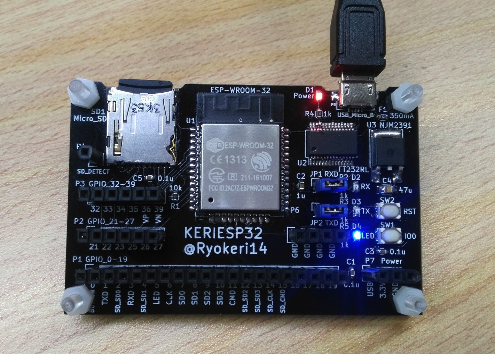
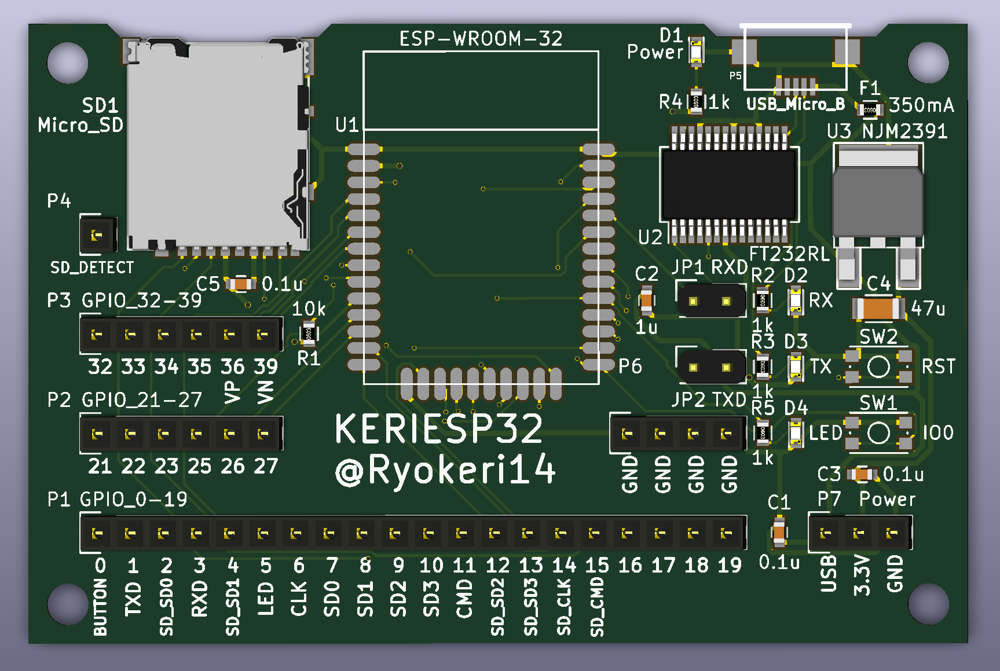
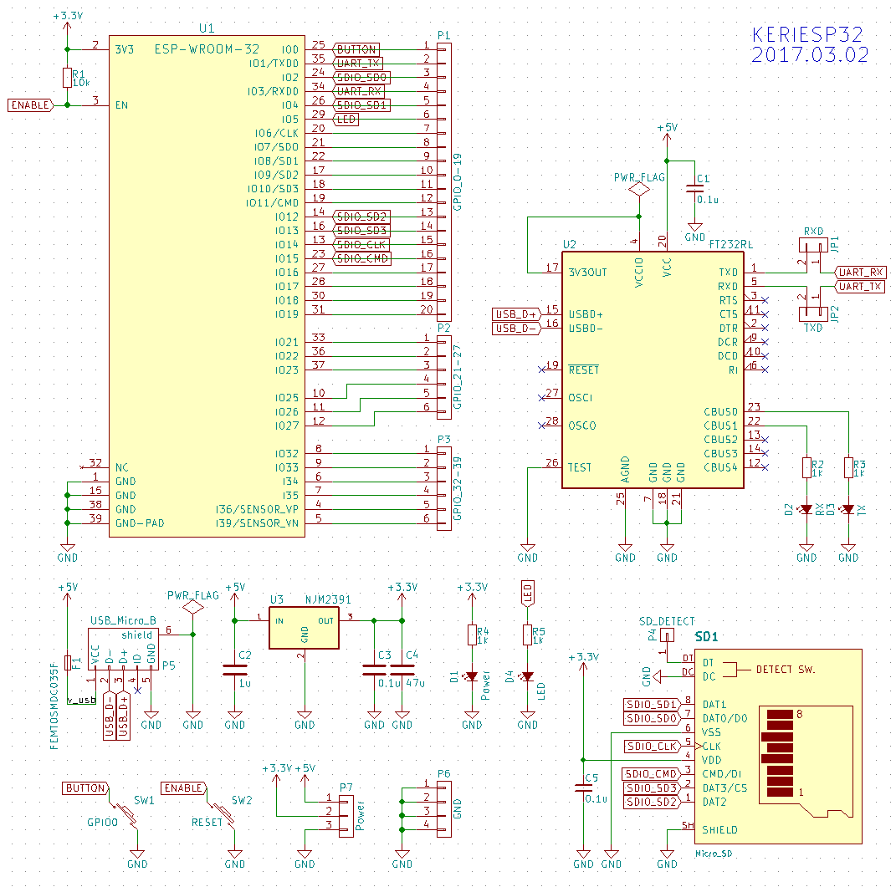
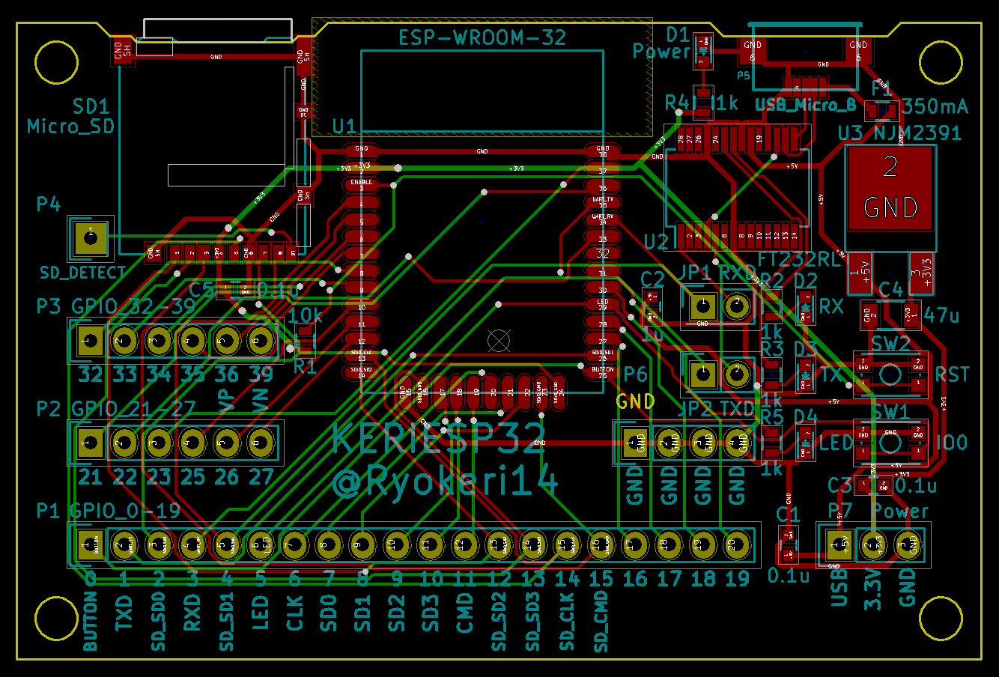
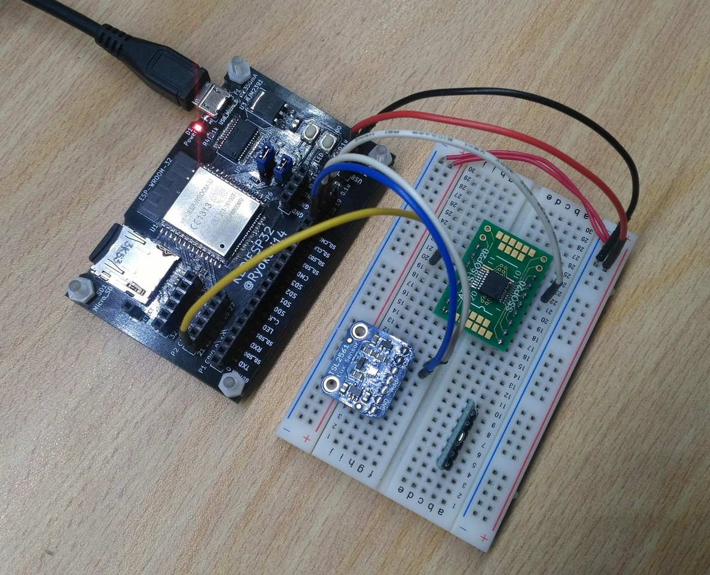
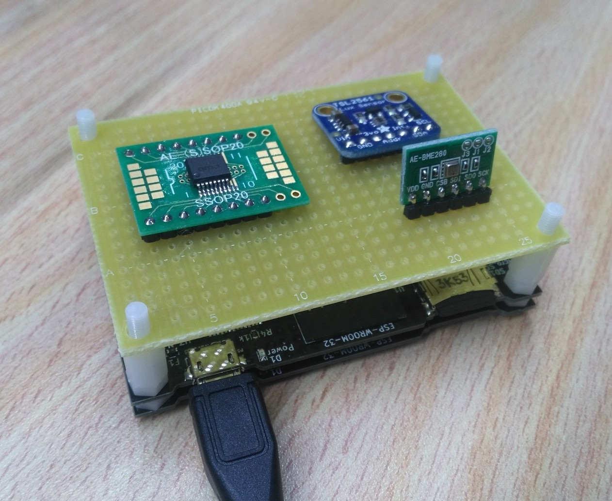

ESP-WROOM-32のブレイクアウトボード
Tweet
ESP-WROOM-32とは
ESP-WROOM-32とは，ESP32というハイスペックなマイコンが搭載されたWiFi&Bluetoothモジュールです．無線モジュールとしてだけでなく，メインマイコンとしても十分使用できます．
ESP-WROOM-32のすごいところはその価格です．ハイスペックなマイコンとWiFiとBluetoothがついているのに，2017年2月現在たったの700円なのです！！
秋月電子で購入できます．

ESP-WROOM-32のブレイクアウトボード
ESP-WROOM-32は表面実装なので，ブレッドボードには取り付けられません．さらに，PCとつなぐにはUSB-シリアル変換モジュールが必要なので，それらを1つの基板に収めたブレイクアウトボードを作ることにしました．
基板の名前は「KERI」+「ESP32」で「KERIESP32」としました．


回路図

部品表
並べて書いてみると多く感じますが，そんなに種類はありません．
| 回路図 | 部品 | 型番 | 備考 | 参考リンク |
|---|---|---|---|---|
| U1 | ESP-WROOM-32 | ESP-WROOM-32 | 秋月 | |
| U2 | USBインタフェースIC | FT232RL | 秋月 | |
| U3 | 三端子レギュレータ | NJM2391DL1-33 | 3.3V1A出力 | 秋月 |
| C1 | チップコンデンサ | 0.1uF/1608サイズ | 秋月 | |
| C2 | チップコンデンサ | 1uF/1608サイズ | 秋月 | |
| C3 | チップコンデンサ | 0.1uF/1608サイズ | C1と同じ | |
| C4 | チップコンデンサ | 47uF/3216サイズ | 秋月 | |
| C5 | チップコンデンサ | 0.1uF/1608サイズ | C1と同じ | |
| D1 | LED | 赤/1608サイズ | 電源LED | 秋月 |
| D2 | LED | 赤/1608サイズ | RXアクセスランプ | D1と同じ |
| D3 | LED | 緑/1608サイズ | TXアクセスランプ | 秋月 |
| D4 | LED | 青/1608サイズ | GPIO5-LED | 秋月 |
| F1 | 電源ポリスイッチ | FEMTOSMDC035F | 定格350mA | 秋月 |
| JP1 | ジャンパ | ピンヘッダ1x2，ジャンパピン | FT232とのRX接続切り離し用 | ピンヘッダ，ジャンパ |
| JP2 | ジャンパ | ピンヘッダ1x2，ジャンパピン | FT232とのTX接続切り離し用 | JP1と同じ |
| P1 | ピンソケット | ピンソケット1x20 | GPIO 0～19 | 秋月 |
| P2 | ピンソケット | ピンソケット1x6 | GPIO 21～27 | P1と同じ |
| P3 | ピンソケット | ピンソケット1x6 | GPIO 32～39 | P1と同じ |
| P4 | ピンソケット | ピンソケット1x1 | SDカード検出端子 | P1と同じ |
| P5 | USB-Micro-Bメス端子 | ZX62-B-5PA(33) | 端子の表裏に注意 | 秋月 |
| P6 | ピンソケット | ピンソケット4x1 | GND | P1と同じ |
| P7 | ピンソケット | ピンソケット3x1 | 電源出力 | P1と同じ |
| R1 | チップ抵抗 | 10kΩ/1608サイズ | ||
| R2 | チップ抵抗 | 1kΩ/1608サイズ | ||
| R3 | チップ抵抗 | 1kΩ/1608サイズ | ||
| R4 | チップ抵抗 | 1kΩ/1608サイズ | ||
| R5 | チップ抵抗 | 1kΩ/1608サイズ | ||
| SD1 | MicroSDコネクタ | DM3AT-SF-PEJM5 | 秋月 | |
| SW1 | 表面実装タクトスイッチ | SKRPACE010 | リセットスイッチ | 秋月 |
| SW2 | 表面実装タクトスイッチ | SKRPACE010 | GPIO0スイッチ | 秋月 |
PCBパターン
今回も自動配線が頑張ってくれました．

使い方
ブレッドボード
こんな感じでブレッドボードと一緒に使うと便利でしょう．

ユニバーサル基板
Cサイズのユニバーサル基板と同じサイズにしたので，2段にして使うことができます．ピンソケットの位置もユニバーサル基板の穴の位置に合わせてあります．

まとめ
ESP32は，コスパ最強なのでガンガン使っていこうと思います．その手始めのブレイクアウトボードでした．とりあえずはこのボードでいろいろな機能を試していきたいです．
ESP32のPWMはフェード機能とかがあって強そうだし，シグマデルタとかよくわからないものもあってやることは尽きなさそうです．春休み中にある程度の実験はしておきたいところです．
追記: 既知のバグ&修正方法
2017.03.16 基板にミスがあったので報告します．
FT232RLが起動しない
FT232RLのTESTピン(26番ピン)は使わないのでオープン状態にしたのですが，どうやらGNDに落とさないとFT232RLが起動しないようです．基板上の25番ピンと26番ピン(GND)をはんだでショートさせると問題なく動作しました．
FT232RLのTX/RX-LEDが光らない
FT232RLのアクセスランプはオープンドレイン出力だったようで，吸い込み方向でLEDをつながないといけなかったみたいです．アクセスランプはなくても動作するのであきらめてください．
詰めの甘さ…
ESP32の配線は入念にチェックしたのですが，FT232RLの使い方を理解していませんでした… 次からは気を付けます．
次の記事
ESP32用UIライブラリ
前の記事